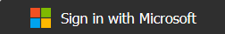

<!--<mat-toolbar color="primary">-->
  <div class="toolbar-spacer"></div>
  @if (!loginDisplay) {
    <div class="login">
      
    </div>
  <!--<button mat-raised-button [matMenuTriggerFor]="loginMenu">Login</button> -->
  }
  <mat-menu #loginMenu="matMenu">
 
    <button mat-menu-item (click)="loginRedirect()">Login using Redirect</button>
    <button mat-menu-item (click)="loginPopup()">Login using Popup</button>
  </mat-menu>

  @if (loginDisplay) {
  
  }
  <router-outlet></router-outlet>
  <!--<button mat-raised-button [matMenuTriggerFor]="logoutMenu">Logout</button>
  }
  <mat-menu #logoutMenu="matMenu">
    <button mat-menu-item (click)="logout()">Logout using Redirect</button>
    <button mat-menu-item (click)="logout(true)">Logout using Popup</button>
  </mat-menu>-->

<!--</mat-toolbar>-->
<!--<div class="container">
  @if (!isIframe) {
  <router-outlet></router-outlet>
  }
</div>-->